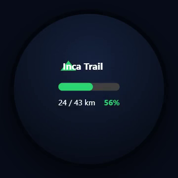
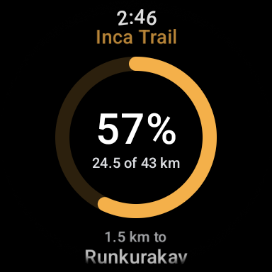
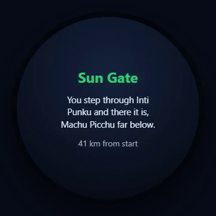
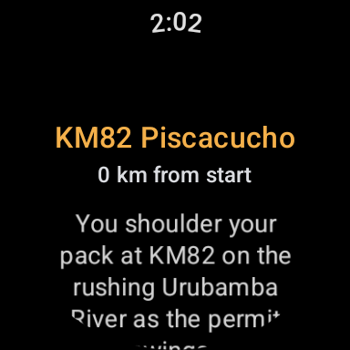

Walk the world's greatest trails, one real step at a time.
Watch Walks turns your ordinary days into an adventure. Live your life as normal and your everyday steps carry you down the world's greatest trails, right on your wrist. No GPS, no accounts, nothing to set up. Glance down whenever you like to see where you are, and collect the story of each place as you reach it.
Set it once. Then just live your life.
Walk your everyday life, and wake up somewhere legendary.
Get it on your watch
On Garmin, add each trail from the Connect IQ store. On Wear OS (Samsung, Pixel and more), install the app from Google Play and unlock extra trails in-app. The Inca Trail is free on both, and a free phone app comes along for the ride.
Walk as normal
Your daily routine becomes your journey. Check in whenever you like to see how far you have come and what is waiting ahead.
Unlock the landmarks
Reach each milestone to unlock a short story of the place, all the way to the finish line.
On the watch you already wear.
Watch Walks runs on Garmin and on Wear OS smartwatches, so most popular brands are covered.
Garmin
Forerunner, Fenix, Venu, Vivoactive, Epix, Instinct and more, via the Connect IQ store.
Wear OS
Samsung Galaxy Watch, Google Pixel Watch, Mobvoi TicWatch, OnePlus Watch and other Wear OS watches, via Google Play.
Your phone
A free Android companion app pairs with your watch. iPhone to follow.
Garmin is live now on the Connect IQ store. The Wear OS app is rolling out through Google Play, starting with the free Inca Trail. Join the beta to walk first.
Watch every step carry you through legendary places.
The same journey on Garmin and on Wear OS (Samsung Galaxy Watch, Google Pixel Watch and more) — a live progress glance and the story of every landmark you reach.




Your data never leaves your devices.
No sign-up. No cloud. No tracking. Watch Walks works entirely on your watch and your phone, the way it should be.
No accounts
Nothing to sign up for. Install and walk. We never ask who you are.
No servers
There's no cloud to hack or leak. Your progress is stored only on your devices.
No tracking
No analytics, no ads, no profiling. Just you and the trail.
From Peru to New Zealand, the world's greatest walks.
Eleven legendary trails to explore, each a complete journey from start to finish, beginning with the Inca Trail.
See where you are. Read the story. Earn the badge.
A free phone app, Android first and iPhone to follow, that turns your everyday steps into a living map. Follow your journey along the real route, read the story of every landmark you reach, and collect a unique badge for each trail you finish.


- A live journey map to follow your journey along the real route, seeing how far you have come and the landmarks still ahead
- Works offline on the trail, the map for each trail downloads once and then needs no signal, so it is always there when you are out walking
- A story to read at every landmark you reach, a glimpse of the place that you keep in your collection
- A unique badge for every trail, each with its own design and colours, yours the moment you reach the finish
- Sync with your watch, pulling your latest progress whenever you open your trail or tap Sync in the app
- Private by design, reading from your watch over Bluetooth and keeping everything on your phone
- Free companion app, with no account and no server
Take the app for a walk.
A quick look at the companion in motion: your journey and live map, the stories you unlock along the way, and your wall of trail badges.
Want the real thing? Get the companion app for Android.
Walk first, tell us what you think.
We're beta testing with Garmin and Wear OS watch owners on Android first, and we'd love to have you walk with us. Sign up now and we'll send your invite the moment a spot opens up.
Be first on the trail.
Join the beta and walk the world's greatest trails, one real step at a time.
Get the Inca Trail, free Join the beta